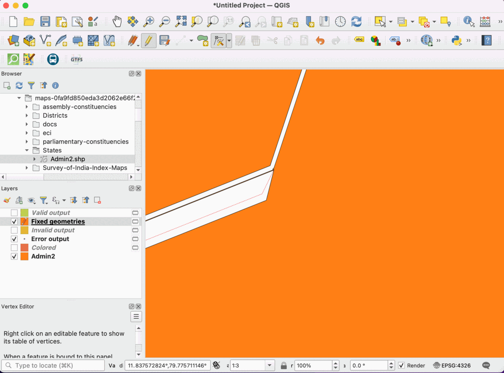
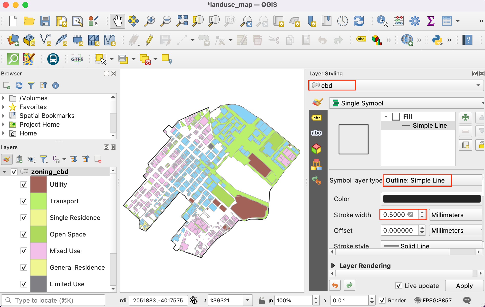

Ravnanje z neveljavnimi geometrijami (QGIS3)¶
Pri delu s sloji vektorskih podatkov lahko naletite na geometrijske napake. Te napake pogosto postanejo del vaših podatkov po izvajanju geoprocesiranja, digitalizacije, urejanja ali pretvorbe podatkov. QGIS3 ima vgrajena orodja in algoritme za odkrivanje in popravljanje neveljavnih geometrij. V tem učbeniku boste spoznali tipičen potek dela za obravnavo neveljavnih geometrij v vaših podatkih.
Opomba
Različni programski sistemi uporabljajo različne pojme veljavnosti geometrije. Vodilni standard za geometrijski model za uporabo v GIS pa je OGC Simple Features Specifications (SFS). V tem učbeniku bomo za preverjanje veljavnosti geometrije uporabili knjižnico GEOS, ki uporablja ta standard. Ta objava vsebuje dober pregled pogostih napak geometrije, kot jih opredeljuje standard OGC.
Pregled naloge¶
Delali bomo z slojem mejna administrativnih enot za Indijo in odpravili geometrijsko napako za državni poligon.
Česa se bomo še naučili¶
Uporaba algoritma *Topological Coloring * (Topološko barvanj) za uporabo barvne sheme za poligonski sloj.
Pridobivanje podatkov¶
Datameet zagotavlja oblikovne datoteke z upravnimi mejami za Indijo, ki jih je ustvarila skupnost.
Prenesite datoteko Datameet Spatial Data Repository [~150 MB] zip. Preneseni arhiv vsebuje več map. Arhiv razširite in uporabite datoteke v mapi States/`.
Vir podatkov: [DATAMEET]
Postopek¶
V brskalniku QGIS poiščite preneseno datoteko
India-States.zip. Razširite jo in povlecite datotekoIndia-States.shpna osnovno okno.

Na plošči Layers boste videli naloženo novo plast
India-States. Pojdite na .

Poskusili bomo zagnati algoritem obdelave na vhodnem sloju, da bi pokazali, kako lahko neveljavne geometrije povzročijo težave med postopki geoprocesiranja. Poiščite in najdite algoritem . Z dvoklikom ga zaženite.

V pogovornem oknu Topological coloring izberite
India-Stateskot Input layer. Vse druge parametre pustite na privzetih vrednostih in kliknite Run.

Opomba
Algoritem Topological coloring izvaja postopek za barvanje karte, tako da noben sosednji poligon nima enake barve. To je uporabna tehnika kartografije, pri čemer Four Color Theorem navaja, da za dosego tega rezultata zadostujejo štiri barve. Obstaja grafoteoretična različica tega teorema, imenovana `Five color theorem<https://en.wikipedia.org/wiki/Five_color_theorem>`_. Izvajanje algoritma QGIS temelji na grafih, zato boste v praksi videli, da bodo kompleksni poligonski sloji, kot je ta, potrebovali do 5 barv.
Med izvajanjem algoritma se v zavihku Log prikaže opozorilo. En element v vhodnem sloju je imel neveljavno geometrijo in je bil med obdelavo preskočen. Privzeta nastavitev za ravnanje z neveljavno geometrijo v orodjarni za obdelavo se nahaja v zavihku in je nastavljena na
Skip (ignore) features with invalid geometries. To je dobra privzeta nastavitev, vendar če je vaš vhodni element velik, lahko to opozorilo spregledate in ne veste, da je bil vhodni element preskočen. Morda boste želeli spremeniti vrednost naStop algoritem execution when a geometry is invalid.

V glavnem oknu QGIS boste videli, da je na plošči Layers dodan nov sloj
Colored. Opazite, da novi plasti manjka stanje, ki je imelo neveljavno geometrijo. Zdaj vemo, da je imel ta poseben poligon stanja neveljavno geometrijo, vendar ne vemo, kaj je bil vzrok. To lahko zlahka ugotovimo. Poiščite in najdite algoritem .

V pogovornem oknu Check Validity (Preveri veljavnost) izberite
India-Stateskot Input layer (Vhodni sloj). IzberiteGEOSkot Method. Kliknite Run.

Ko algoritem konča obdelavo, se na plošči Layers` pojavijo trije novi sloji -
Valid output,Invalid outputinError output. SlojError outputvsebuje lokacije in opise geometrijskih napak. Kliknite ga z desno tipko miške in izberite Open Attribute Table.

Opomba
V dokumentaciji QGIS je podroben članek o Types of error messages and their meanings, ki pojasnjuje vzroke za vse napake.
Videli boste, da je sporočilo o napaki Ring self-intersection. Izberite vrstico in kliknite gumb Zoom map to selected features. Ko boste zemljevid povečali, boste videli glavni vzrok za napako geometrije.

QGIS ima vgrajen algoritem za samodejno odpravljanje geometrijskih napak. Poiščite in najdite algoritem . Z dvojnim klikom ga zaženite.

V pogovornem oknu Fix Geometries izberite
India-Stateskot Input layer in kliknite Run.

Na ploščo Layers bo dodan nov sloj
Fixed Geometries. Na tej točki je napaka geometrije odpravljena in na tem sloju lahko brez težav zaženete kateri koli algoritem obdelave. Vidimo pa lahko, da je med sosednjimi poligoni še vedno vrzel, ki je nepričakovana in lahko v nadaljevanju povzroči topološke napake. Tudi to lahko popravimo z urejanjem poligona. Kliknite gumb Toggle Editing v orodni vrstici Digitizing Toolbar. Izberite orodje Vertex Tool in v spustni vrstici izberiteVertex Tool (Current Layer).

Ko je orodje za vrhove aktivno, kliknite na vrh, da ga izberete. S pritiskom na tipko Delete lahko izbrišete vrh ali ga povlečete, da ga premaknete. Vozlišča lahko premaknete tako, da se rob poligona zdaj dotika sosednjega poligona.

Ko to storite, ponovno kliknite gumb Toggle Editing in kliknite Save.

Ponovno zaženimo algoritem .

V pogovornem oknu Topological Coloring (Topološko barvanje) se prepričajte, da ste kot Input layer (Vhodna plast) izbrali Fixed Geometries (Fiksne geometrije). Kliknite Run.

Videli boste, da se algoritem izvaja brez napak in da se na ploščo Layers doda nova plast
Colored. Upoštevajte, da algoritem sam ne obarva plasti, temveč deluje tako, da vsakemu poligonu doda nov stolpec z imenomcolor_id, ki ga lahko uporabite za dodelitev edinstvene barve, ki se razlikuje od sosednjih poligonov. Izberite slojColoredin kliknite gumb Open the Layer Styling Panel (Odpri ploščo za oblikovanje sloja).

Izberite renderer
Categorizedin stolpeccolor_idkot Value. Kliknite Classify. Zdaj boste videli zemljevid, ki je obarvan tako, da imajo sosednji poligoni različne barve.